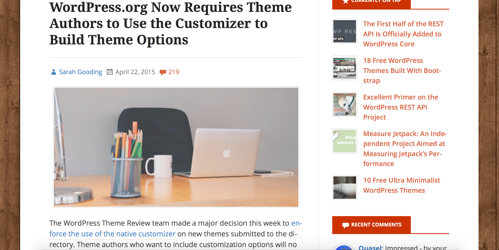

Dave Green
Front-end & WordPress
Developer at Make Do
@davetgreen
Building themes with
the WP Customizer API
You'll be less like this...

And more like this...

In the beginning, we had theme options...

Now, we have the Customizer API...

A brief summary of the Customizer API
-
Since WordPress 3.4 which was released in June 2012
-
Integrates with the existing WordPress Settings API
-
No external dependencies because it is built into core
-
Gives users instant feedback when they make changes
-
Can be extended to add more customisation options
Preparing the Theme
Preparing the theme - Step #1
Create a subfolder in your theme called inc if you don’t already have one. Now create a file in that folder called customizer.php.
your-theme/
inc/
customizer.php
js/
functions.php
index.php
style.cssPreparing the theme - Step #2
Open functions.php and add the relevant line of code to require the file you just created. Without it, your customizer code won't execute!
// Child Theme
require get_stylesheet_directory() . '/inc/customizer.php';
// Parent Theme
require get_template_directory() . '/inc/customizer.php';
// Rest of your functions file...The customize_register action hook
All of your Customizer code needs be contained inside one or more functions that are hooked into this action, or it won't be executed.
function dtg_customize( $wp_customize ) {
// Define settings, panels, sections and controls
// inside this function or multiple functions using
// the same action hook.
}
add_action( 'customize_register', 'dtg_customize' );The WP Customize Object
There are twelve $wp_customize methods available for you to use. You'll mostly be using the add_ methods.
| Settings | Panels | Sections | Controls |
|---|---|---|---|
| add_setting | add_panel | add_section | add_control |
| get_setting | get_panel | get_section | get_control |
| remove_setting | remove_panel | remove_section | remove_control |
Adding a setting
Customizer settings are responsible for saving the user's changes and sanitizing the data, as well as facilitating the 'live preview' feature.
$wp_customize->add_setting( 'dtg_phone_number',
array(
'type' => 'theme_mod', // OR 'option'
'default' => '07890 123 456',
'capability' => 'manage_options',
'transport' => 'refresh', // or 'postMessage'
'sanitize_callback' => 'dtg_validate_phone'
)
);Validating Setting Data
Here we use a regular expression to ensure our number setting contains only numbers and spaces: no letters or special characters.
// Add to the top/bottom of customizer.php.
function dtg_validate( $data ) {
$sanitized = preg_replace( '/[^0-9 ]+/', '', $data );
return $sanitized;
}Theme_Mod versus Option
Theme_Mod
Settings can only be used by that specific theme. Recommended.
All customizer settings are stored within a serialized array in a single option in the database.
Option
Settings can be used by absolutely any theme or plugin.
Each of the customizer settings are stored as a unique option in the database.
Adding a section
A section is a container for customizer controls that can be grouped under a similar theme e.g. colour scheme, branding etc.
$wp_customize->add_section( 'dtg_section_contact',
array(
'title' => 'Contact Info',
'description' => 'Contact info for DTG',
'capability' => 'manage_options',
'theme-supports' => '',
'priority' => '10',
'panel' => 'dtg_panel'
)
);Adding a panel
A panel is a UI container for customizer sections, and is useful if you have multiple sections that can grouped under a similar theme.
$wp_customize->add_panel( 'dtg_panel',
array(
'title' => 'DTG Panel',
'description' => 'Panel for DTG',
'capability' => 'manage_options',
'theme-supports' => '',
'priority' => '10'
)
);Adding a control
Controls are UI elements such as a text fields, colour pickers and image uploaders which the user interacts with to update a setting.
$wp_customize->add_control( new WP_Customize_Control(
$wp_customize,
'dtg_phone_number',
array(
'label' => 'Phone Number',
'section' => 'dtg_section_contact',
'settings' => 'dtg_phone_number',
'type' => 'text',
'priority' => 10,
'active_callback' => 'is_front_page' // NEW!
)
) );Adding a control to an existing section
$wp_customize->add_control( new WP_Customize__Control(
$wp_customize,
'dtg_intro_text',
array(
'label' => 'Introductory Text',
'section' => 'title_tagline', // BINGO!
'settings' => 'dtg_intro_text',
'priorty' => 10
)
) );Additional Control Types
In addition to the WP_Customize_Control class used for standard HTML form elements, there are classes for several other control types..
-
WP_Customize_Color_Control -
WP_Customize_Upload_Control -
WP_Customize_Image_Control -
WP_Customize_Background_Image_Control -
WP_Customize_Header_Image_Control
-
WP_Customize_Cropped_Image_Control -
WP_Customize_Media_Control
Getting a setting value
The function get_theme_mod() is used to retrieve your customizer
settings from the database for use in your theme.
// You should escape the string before you use it.
echo esc_html( get_theme_mod( 'dtg_welcome' ) );
// You can add a fall back value which will override
// the setting's default value if it exists.
$text = esc_html( get_theme_mod( 'dtg_welcome', 'Hello!' ) );If you've elected to register the setting as an option, you'll need to retrieve it by using the get_option function instead.
Adding a colour picker
Let's add a colour picker to change the colour of the site title.
function dtg_add_colour_picker( $wp_customize ) {
$wp_customize->add_setting(
'dtg_title_colour',
array(
'default' => '#000',
'capability' => 'manage_options',
'transport' => 'postMessage'
'priority' => 10
)
);$wp_customize->add_section(
'dtg_section_colour',
array(
'title' => 'Colour Options',
'description' => 'Colour options for DTG',
'capability' => 'manage_options',
'priority' => '10',
'panel' => 'dtg_panel',
)
);$wp_customize->add_control(
new WP_Customize_Color_Control(
$wp_customize,
'dtg_title_colour',
array(
'label' => 'Title Colour',
'section' => 'dtg_section_colour',
'settings' => 'dtg_title_colour'
)
)
);
}
add_action( 'customize_register', 'dtg_add_colour_picker' );Generating the new CSS
Now that we've chosen a new colour for the target elements, we need to ensure that we're generating the new CSS on the front-end.
In order to do this, we need to hook into the wp_head action using a function added to our customizer.php file.
function dtg_customize_css() {
? >
< ?php
}
add_action( 'wp_head', 'dtg_customize_css' );Enabling Live Preview
Changing the the transport argument from refresh to postMessage updates the live preview using JS instead of refreshing the iFrame.
$wp_customize->add_setting( 'dtg_phone_number',
array(
'default' => '07890 123 456',
'capability' => 'manage_options',
'transport' => 'postMessage', // BINGO!
'sanitize_callback' => 'dtg_validate'
)
);Adding customizer JS
If one doesn't exist in your theme, create a file called customizer.js in your theme's Javascript directory containing the following:
( function( $ ) {
// Customizer JS goes here.
} )( jQuery );
Now you need to add a Javascript handler for every customizer setting
that needs to use the live preview feature.
Adding a JS handler
Let's add a handler to enable live preview for our phone number setting.
wp.customize( 'dtg_phone_number', function( value ) {
// Update the HTML value of the phone number element.
value.bind( function( newval ) {
$( '.phone-number' ).html( newval );
} );
} );Adding a JS handler
And another handler for the site title colour setting.
wp.customize( 'dtg_title_colour', function( value ) {
// Change the colour of the title elment.
value.bind( function( newval ) {
$( '.site-title a' ).css( 'color' , newval );
} );
} );Enqueue the customizer JS
Now we must enqueue the customizer.js file, the WordPress way.
function dtg_customizer_js() {
wp_enqueue_script(
'dtg-customizer-js',
get_stylesheet_directory_uri() . '/js/customizer.js',
array( 'jquery','customize-preview' ),
false,
true // In the footer!
);
}
add_action('customize_preview_init', 'dtg_customizer_js');Let's have a look...
Here's one I made earlier
Making Modifications
Use the get_ methods to modify the properties of a given
customizer setting, panel, section or control.
$wp_customize->get_setting( 'dtg_phone_number' )->default =
'999';
$wp_customize->get_panel( 'dtg_panel' )->description =
'Stop! Panel Time!';
$wp_customize->get_section( 'dtg_section' )->title =
'DTG ROCKS!';
$wp_customize->get_control( 'dtg_phone_number' )->label =
'Telephone';Removing items from
the Customizer object
Anything that exists in the customizer - including default options - can be removed using the remove_ methods.
$wp_customize->remove_panel( 'dtg_panel' );
$wp_customize->remove_section( 'header_image' );
$wp_customize->remove_section( 'background_image' );
$wp_customize->remove_control( 'background_color' );
$wp_customize->remove_control( 'header_background_color' );
$wp_customize->remove_control( 'sidebar_textcolor' );Custom Setting Types
Save certain settings to a different database table and handle the live previews your own way by first defining a custom setting type.
$wp_customize->add_setting( 'dtg_custom_setting',
array(
'type' => 'custom_type',
'default' => 'value,
)
);Saving the Data
function dtg_update( $val, $setting ) {
// Save the $val for the $setting.
}
add_action( 'customize_update_custom_type', 'dtg_update' );Handling the Live Preview
function dtg_preview( $setting ) {
// Update the live preview for the $setting
}
add_action( 'customize_update_custom_type', 'dtg_preview' );Just one more thing...

Wordpress.org Themes
In April 2015, the WordPress Theme Review Team decided to enforce the use of the Customizer for theme options in all newly submitted themes.
YOU SHOULD TAKE A LOOK AT...
-
WordPressCodex: Theme Customization API
https://codex.wordpress.org/Theme_Customization_API -
WordPress Theme Handbook: Theme Options – The Customizer API
https://developer.wordpress.org/themes/advanced-topics/customizer-api/ -
Paul Underwood: WordPress Theme Customizer Custom Controls
http://www.paulund.co.uk/custom-wordpress-controls
https://github.com/paulund/wordpress-theme-customizer-custom-controls - Devin Price - Customizer Library
http://wptheming.com/2014/08/customizer-library/
https://github.com/devinsays/customizer-library